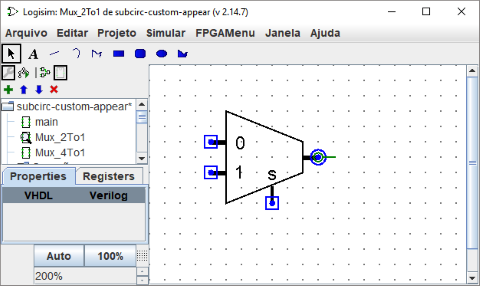
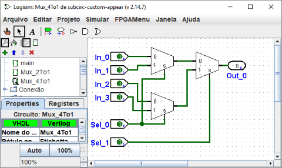
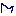

Editar aparência de subcircuitos
Aparência padrão
Por padrão, quando um subcircuito é colocado dentro de um circuito maior, ele será desenhado como um retângulo com um entalhe indicando a face norte do subcircuito. Pinos serão colocados nas bordas do retângulo com base em sua direção: pinos virados para o leste no layout (e que geralmente aparecem no lado oeste) serão colocados no lado do retângulo oeste, de acordo com sua ordem de cima para baixo no layout. Pinos que estiverem virados para o sul no layout (normalmente na direção norte) serão colocados no lado norte do retângulo, de acordo com a ordem da esquerda para a direita no layout.
O retângulo padrão poderá opcionalmente incluir algumas letras que aparecerão no meio. Para especificar isso, escolher a ferramenta de seleção ( ) e clicar no fundo do layout do circuito. Isso irá mostrar a tabela de atributos do circuito, incluindo o rótulo, direçao da etiqueta, e fonte de rótulos. O valor do atributo Rótulo será desenhado no centro do retângulo; o atributo da direção da etiqueta para personalizar o sentido em que o texto será desenhado, e, claro, atributo que personaliza a fonte utilizada.
) e clicar no fundo do layout do circuito. Isso irá mostrar a tabela de atributos do circuito, incluindo o rótulo, direçao da etiqueta, e fonte de rótulos. O valor do atributo Rótulo será desenhado no centro do retângulo; o atributo da direção da etiqueta para personalizar o sentido em que o texto será desenhado, e, claro, atributo que personaliza a fonte utilizada.
Forma personalizada
A forma padrão é muito útil, e de fato Logisim existiu por muitos anos, sem outra opção. Se, no entanto, preferir que o subcircuito seja desenhado de forma diferente, você poderá selecionar Editar Forma do Circuito
a partir do menu de projeto, e o Logisim mudará da sua interface normal de edição de layout para outra capaz de alterar a forma (aparência) do circuito. Abaixo, editaremos a aparência do multiplexador 2:1, para que seja desenhada como de costume por um trapézio, em vez de um retângulo. (Você poderá ver a barra de ferramentas do projeto, logo abaixo da normal. Isso poderá ser ativado através do menu de projeto, e ela permitirá uma mudança mais rápida entre a edição de layout e da forma.)

Com a forma do multiplexador 2:1 desenhada como acima, o layout para o multiplexador 4:1, então, aparecerá como o que se segue.

O editor de forma (aparência) é como um programa para desenho tradicional, mas há alguns símbolos especiais para indicar como o desenho funcionará quando colocado em um layout de circuito. Esses símbolos especiais não poderão ser removidos.
- O círculo verde com uma linha que vem de fora, chamaremos de
âncora.
Há exatamente uma âncora em cada subcircuito. Cada componente em um circuito tem um único ponto para identificar a sua localização; um usuário verá isso ao criar um novo componente. O clique do mouse identificará apenas um local e, o componente será colocado em relação a ele (geralmente com a saída principal na posição do mouse). A âncora identificará a localização relativa ao desenho global do mouse quando o subcircuito for criado.A âncora também identificará a direção em sua aparência, conforme indicado pela direção da linha de pontos da âncora de seu círculo. Ao colocar um subcircuito em um layout, o usuário poderá mudar a face do subcircuito, a âncora indicará a direção em que a aparência será orientada. No nosso exemplo, a âncora será voltada para o leste, e cada instância do subcircuito no multiplexador 4:1 também estará voltada para o leste, então eles serão todos desenhados com a mesma orientação que a aparência do multiplexador 2:1.
- Os círculos azuis e quadrados com pontos são as
portas
dos subcircuitos Haverá exatamente tantas portas quantos os pinos de entrada e saída no circuito. Portas correspondentes às entradas serão desenhadas como quadrados, enquanto as portas correspondentes às saídas serão desenhados como círculos. Cada porta indicará como uma conexão para o circuito corresponderá a um pino de entrada ou saída dentro do layout.Quando você selecionar uma porta, o Logisim indicará o pino correspondente fazendo sobressair um diagrama em miniatura do layout no canto inferior direito da janela, com o(s) pino(s) correspondente(s) desenhado(s_ em azul. Isso não acontecerá quando todas as portas estiverem selecionados.
A barra de ferramentas contém aquelas para adicionar formas adicionais, conforme listado abaixo com descrições de como as teclas shift e alt modificam o comportamento da ferramenta. Além disso, clicando ou arrastando o mouse com a tecla control pressionada normalmente remeterá a posição do mouse para o ponto mais próximo na grade.
|
|
Selecionar, mover, copiar, colar e formas. |
|
|
Adicionar ou editar texto. |
|
|
Criar um segmento de linha. Shift-drag mantém o ângulo da linha em um múltiplo de 45°. |
|
|
Criar uma curva Bézier quadrática. Para o primeira arraste, onde você especificará os parâmetros da curva, o shift-drag manterá os pontos da extremidade em um ângulo que será um múltiplo de 45°. Em seguida, clicar para indicar a localização do ponto de controle; shift-click garantirá que a curva será simétrica, enquanto alt-click desenhará a curva que passará pelo ponto de controle. |
|  | Criar uma seqüência de linhas conectadas, cujos vértices serão indicados por uma sucessão de clicks. Shift-click garantirá que o ângulo entre o vértice anterior e o atual será um múltiplo de 45°. Bastará um duplo clique ou pressionar a tecla Enter para concluir o desenho. |
| Criar um retângulo arrastando-o de um canto para outro oposto. Shift-drag para criar um quadrado, e alt-drag para criar o retângulo a partir do centro. | |
|
|
Criar um retângulo com cantos arredondados arrastando-o de um canto para outro oposto. Shift-drage para criar um quadrado, e alt-drag para criar o retângulo de a partir do centro. |
| Criar uma oval mediante o arrastar de um canto de seu contorno para outro oposto. Shift-drag para criar um círculo e alt-drag para criar a oval a partir do centro. | |
|
|
Criar um polígono arbitrário, cujos vértices serão indicados por uma sucessão de cliques. Shift-click garantirá que o vértice estará a 45° do anterior. Se der um duplo clique, pressionar a tecla Enter, ou clicar no vértice inicial completará o desenho. |
Próximo: Depuração de subcircuitos.